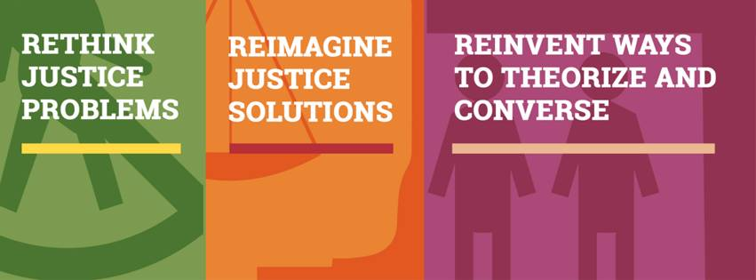

Justice Adda
Justice AddaAn Adda approach to Justice
Conversations on human rights and justice have for far too long become academic and theoretical, employing a sophisticated flourish instead of being useful and usable for a citizen and a justice user. These conversations that often address the common legal needs of citizens become inaccessible to those untrained because the form and medium that they utilize is inherently restrictive to those not engaged in the field.
This needs to change and there is a growing need to democratize access to information about ordinary justice problems and facilitate greater participation among different sections of society in advancing innovations and ideas for access to justice.
There are several barriers to justice: crippling poverty, a lack of knowledge about rights and duties among citizens, complicated and beguiling court procedures, as well as financial and opportunity costs of accessing the law and justice delivery systems.
Addressing barriers to justice implies focusing on what the justice user requires, experimenting and seeking out new ways of doing things and curating a range of solutions that inspire a culture of openness, efficiency and effectiveness.
Justice Adda seeks to provide a space where design and technology enable the development of content that helps to improve access to justice by employing creative forms of disseminating and producing information with the explicit aim of reducing educational, financial, spatial and temporal boundaries that might inhibit a justice user.
The inspiration for building a conversation where knowledge and information is democratized comes from the idea of an “Adda” which colloquially, in India, represents a commune for discussions and banter, a space for theorizing, and dreaming and a collective where persons of all expertise, affiliations and peculiarities dissect the next big and small idea threadbare.
Justice Adda aims to provide a platform for rethinking problems inherent in the pursuit of justice, reimagining solutions to such problems, and reinventing ways to theorize and converse about such problems.
Found this piece ironic? Check out our illustration below.

Siddharth Peter de Souza
Company
Justice Adda is a social enterprise that helps human rights campaigners, development organizations, justice and other legal institutions to empower people to understand and use the law by providing content, design, and technology solutions. We are part of the Cambridge Social Ventures programme in the Centre for Social Innovation at Cambridge Judge Business School.
Mission & Objectives
Justice Adda aims to bring together a community of innovators, legal and development practitioners, technologists, designers, activists, academics and students who seek to produce solutions to make justice more accessible to citizens.
How Can We Help?
Our Approach
We strive to develop strategies and solutions that place you and your needs at the core. We believe in an iterative and collaborative approach by employing design thinking methodologies that have been pioneered at IDEO and Stanford among other institutions.
Find a Solution